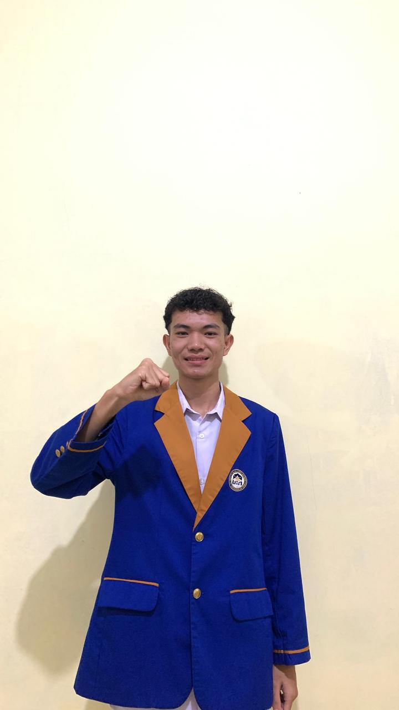
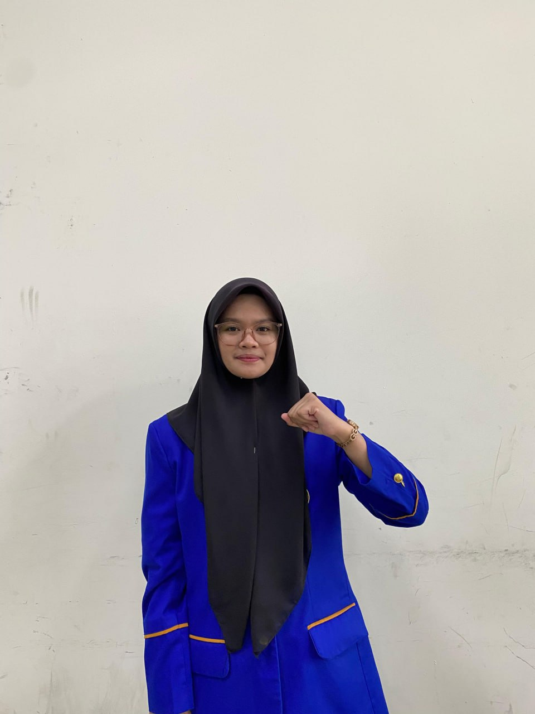
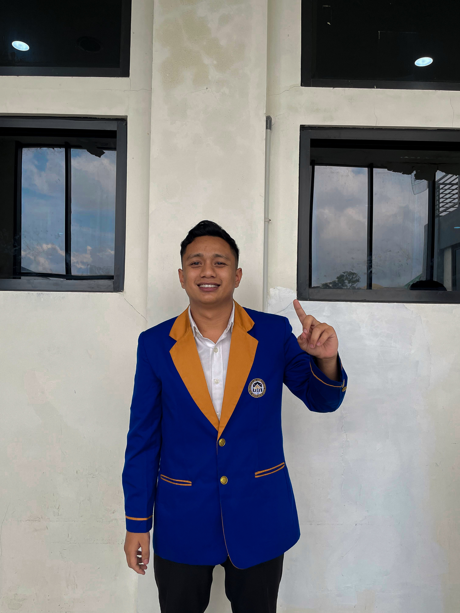
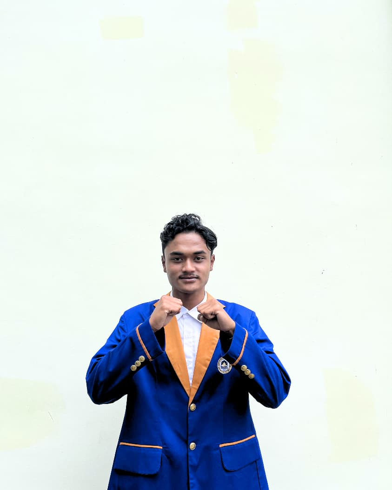
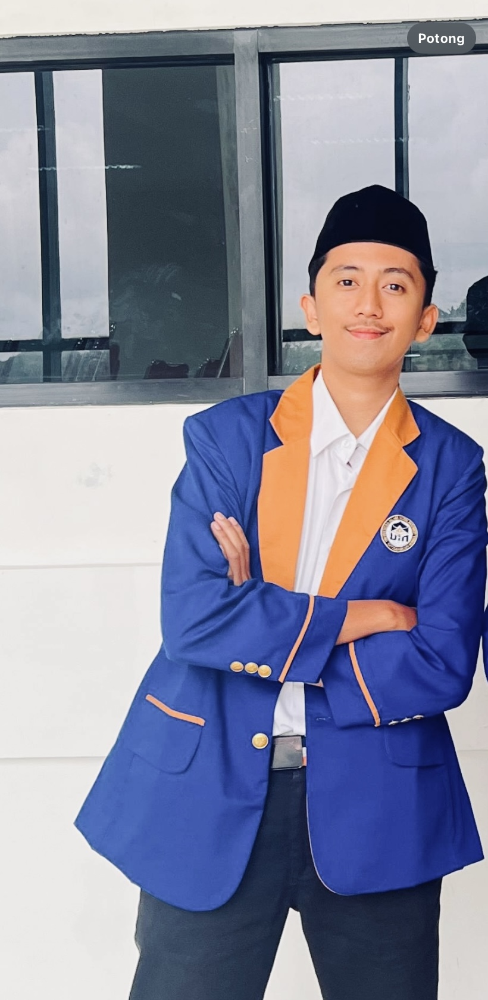
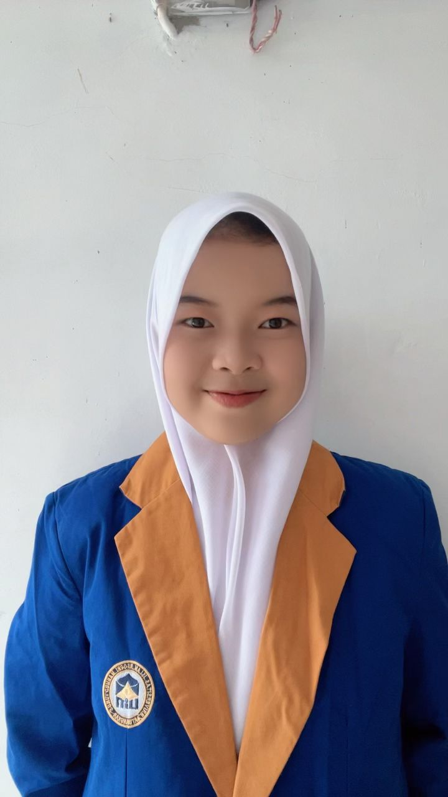
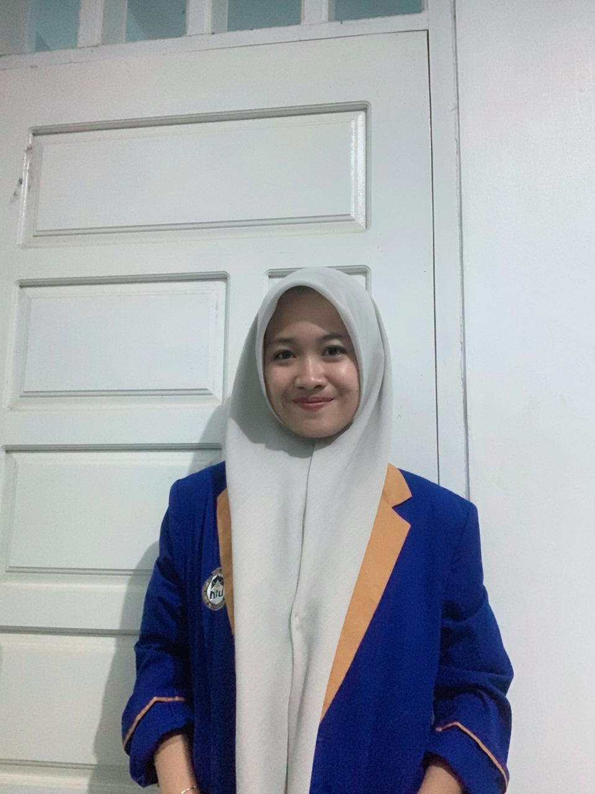

Struktur Pengurus

Alwy Farid Sayuti
Ketua Umum
Adisty Raudhatul Hasanah
Sekretaris Jendral

Dheva Valencia
Bendahara Umum

Aurellino Daffa
Kadis Internal dan Kaderisasi

Eva Saragih
Sekretaris Dinas Internal dan Kaderisasi

Aditya Maulana Febrian
Kepala Dinas Diplomasi Eksternal

Silvia Oktaviani
Sekretaris Dinas Diplomasi Eksternal

Alfandes Putra Hidayat
Kepala Dinas Pemberdayaan Sumber Daya Mahasiswa

Rahma Nadya
Sekretaris Dinas Pemberdayaan Sumber Daya Mahasiswa
Aron Eka Pramana Putra
Kepala Dinas Sosial Masyarakat

Fatimah Azzahra
Sekretaris Dinas Sosial Masyarakat

Hanif Hidayatullah
Kepala Dinas Komunikasi Dan Informasi

Fadilla Hardi
Sekretaris Dinas Komunikasi Dan Informasi

Ariel Al Muqsith
Anggota Dinas Komunikasi Dan Informasi
.jpg)
Ibnu Roofi
Kepala Dinas Ekonomi Kreatif Dan Kewirausahaan
.png)
Regita Cahyani Nabila
Sekretaris Dinas Ekonomi Kreatif Dan Kewirausahaan

Fachrul Rezha Abdillah
Kepala Dinas Keagamaan

Helsinki Agustino
Sekretaris Dinas Keagamaan

Fitria Amanda Handriviani
Kepala Dinas Pemberdayaan Perempuan

Sarah Novelina
Sekretaris Dinas Pemberdayaan Perempuan
.jpg)
Ahmad Jailani
Kepala Dinas Advokasi Dan Kesejahteraan Mahasiswa

Muhammad Tsaqif Alivia
Sekretaris Dinas Advokasi Dan Kesejahteraan Mahasiswa

Rossi fitriyany
Kepala Dinas Administrasi Dan Keuangan
Desi Wulandari
Sekretaris Dinas Administrasi Dan Keuangan